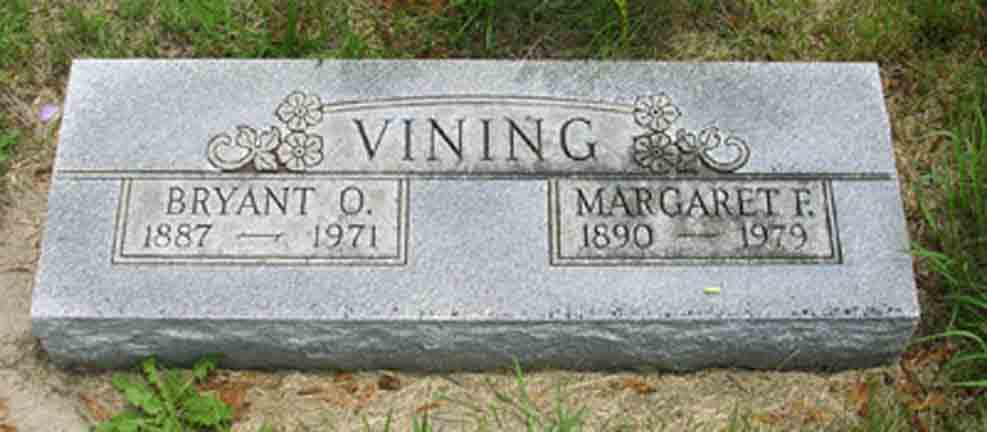
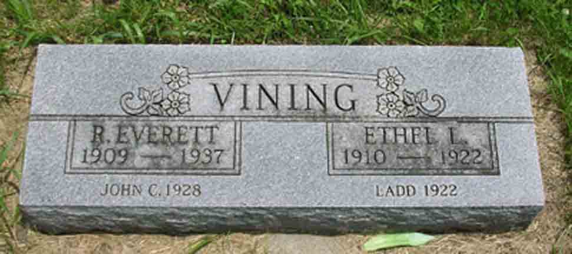
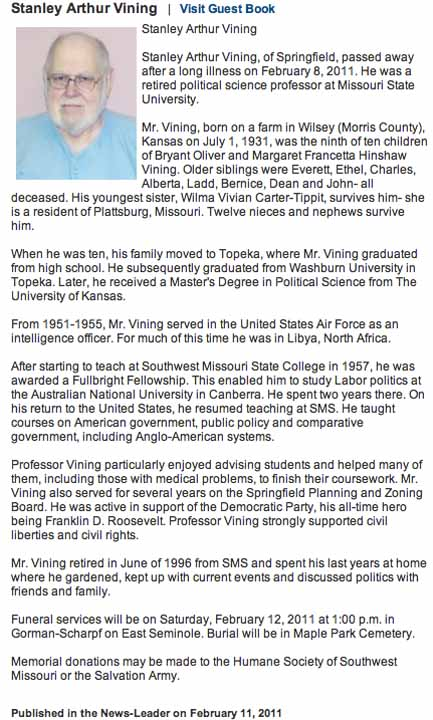

Census Data
| 1910 | 1920 | 1930 | 1940 | |
| Bryant Oliver Vining | 22 | 32 | 43 | 52 |
| Margaret Francetta (Hinshaw) Vining | 20 | 29 | 40 | 50 |
| Robert Everett Vining | 1 | 10 | 21 | [living? in separate household] |
| Ethel LaJoy Vining | 9 | [living? in separate household] | ||
| Charles Benjamin Vining | 4 | 14 | living in separate household | |
| Alberta Lorraine Vining | 1 | 11 | living in separate household | |
| Ladd Vining | dead | |||
| Orilla Bernice Vining | 5 | 14 | ||
| Willis Dean Vining | 3 | 13 | ||
| John Curtis Vining | dead | |||
| Stanley Arthur Vining | 8 | |||
| Wilma Vivian Vining | 7 |


Death Data
Headstone for Bryant Oliver Vining and Margaret Francetta (Hinshaw) Vining, in Wilsey Cemetery, Wilsey, Morris County, Kansas (from Find A Grave):

